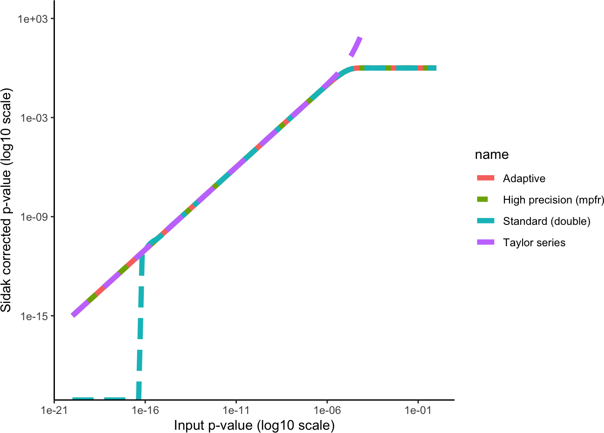

Numerically stable Sidak correction
Compare with other implementations
Developed by Gabriel Hoffman
Run on 2025-07-16 15:46:36
Source:vignettes/sidakCorrection.Rmd
sidakCorrection.RmdFunction to compute using multiple methods
library(ggplot2)
library(tidyverse)
library(sidakCorrection)
sidak <- function(p, n, method = c("adaptive", "double", "mpfr", "taylor"), precBits = 1000) {
method <- match.arg(method)
switch(method, double = 1 - (1 - p)^n, mpfr = {
p_mpfr <- Rmpfr::mpfr(p, precBits = precBits)
as.numeric(1 - (1 - p_mpfr)^as.integer(n))
}, taylor = {
# Set the cutoff to be 1, so the Taylor series is always used
sidakCorrection(p, n, 1)
}, adaptive = {
sidakCorrection(p, n)
})
}Example for single p-values
p = 1e-18
n = 1e+05
sidak(p, n, "double")## [1] 0
sidak(p, n, "mpfr")## [1] 1e-13
sidak(p, n, "taylor")## [1] 1e-13
sidak(p, n, "adaptive")## [1] 1e-13Compare methods
Here we plot the values from computing the Sidak correction using * adaptive approach using either double precision or Taylor series depending on the value of p * High precision with Rmpfr * standard approach using double precision arithmetic * Taylor series
x = 10^-seq(0, 20, length.out = 100)
df = tibble(x = x, `Standard (double)` = sidak(x, n, "double"), `High precision (mpfr)` = sidak(x,
n, "mpfr", 1000), `Taylor series` = sidak(x, n, "taylor"), Adaptive = sidak(x,
n, "adaptive")) %>%
pivot_longer(!x)
df %>%
ggplot(aes(x, value, color = name, linetype = name)) + geom_line(linewidth = 2) +
theme_classic() + theme(aspect.ratio = 1) + scale_x_log10() + scale_y_log10(limits = c(1e-19,
1000)) + xlab("Input p-value (log10 scale)") + ylab("Sidak corrected p-value (log10 scale)")
We see that the double precision approach deviates from the high
precision method for small values of p, while the Taylor series deviates
for large values of p. The adpative approach used bo the
sidakCorrection() function matches that high precision
method.